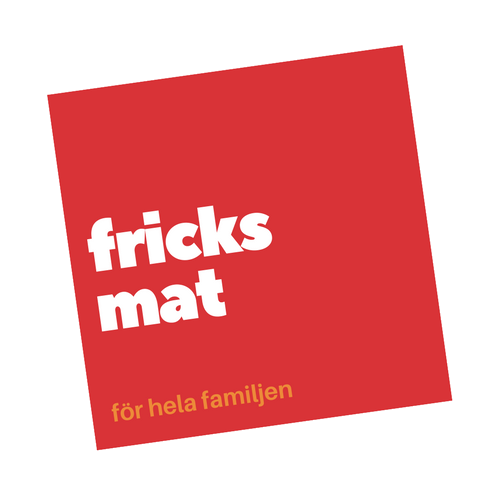

<nav class="opaque navbar navbar-expand-lg navbar-light">
  <a routerLink="/"></a>
    <button class="navbar-toggler" type="button" data-toggle="collapse" data-target="#navbarTogglerDemo02" aria-controls="navbarTogglerDemo02" aria-expanded="false" aria-label="Toggle navigation">
        <span class="navbar-toggler-icon"></span>
    </button>

    <div class="collapse navbar-collapse" id="navbarTogglerDemo02">
        <ul class="navbar-nav mr-auto mt-2 mt-lg-0">
            
            <li class="nav-item">
                <a class="nav-link" routerLink="/recipes">Sök</a>
            </li>
            <li class="nav-item">
                <a class="nav-link disabled" routerLink="/addRecipe">Lägg till recept</a>
            </li>
        </ul>
        <form class="form-inline my-2 my-lg-0">
            <a class="btn btn-outline-success my-2 my-sm-0">Logga in</a>
        </form>
    </div>
</nav>
<div class="container">
  <router-outlet></router-outlet>
</div>

